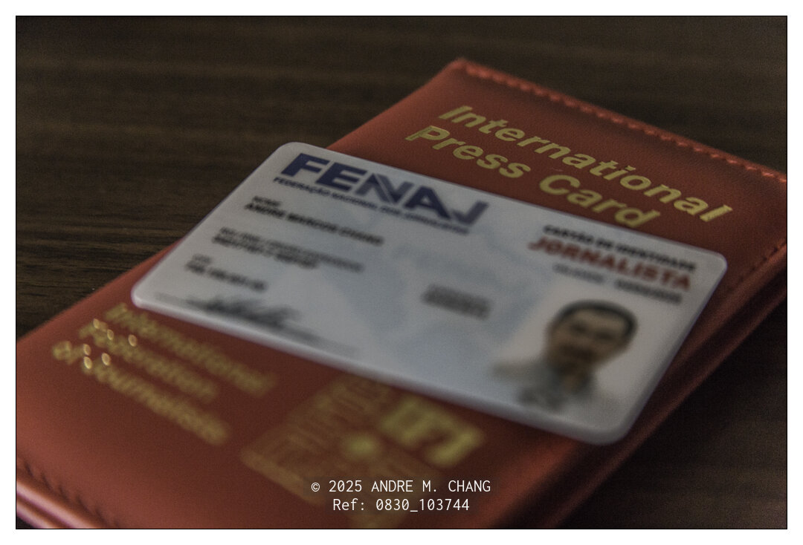
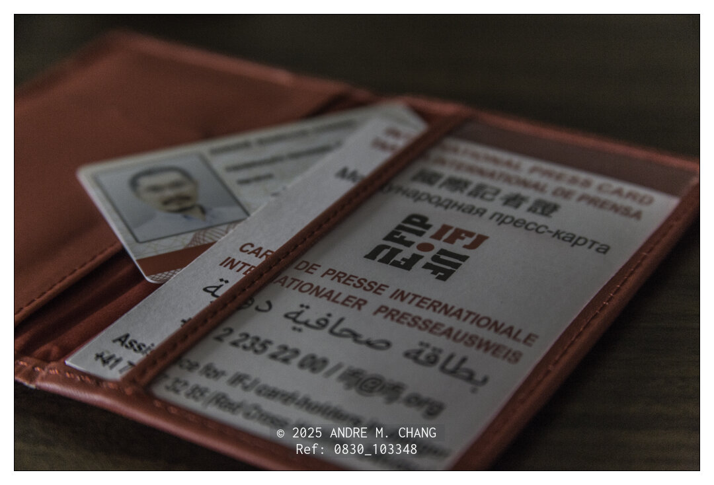
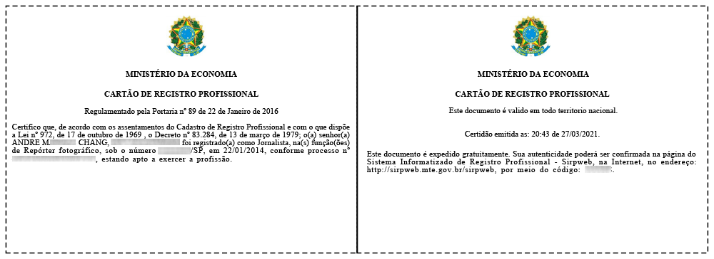

ANDRÉ_
Born in Brazil and raised in a multicultural environment.
• Third Culture Kid/Individual (TCK/TCI):
Citizen of the World
Visual work featured in publications such as The Guardian, Börsen-Zeitung, Business Insider, Demócrata, Der Spiegel, Deutsche Welle, Europa Press, Financial Times, FinanzBusiness, Folha de S.Paulo, Fox Sports, G1, ilPost, L'Est Républicain, Le Temps, Marie Claire, Metro, National Geographic, Postimees, R7, Stern, The Brazilian Report, The Objective, The Wall Street Journal (WSJ), Uol, Veja, Worldcrunch, and many others.
Currently regular contributor for ZUMA Press, a US independent press agency and wire service
Open for partnership / Available for assignments: Contact
National and International Journalist Cards
2025 ‐ 2028
Carteira de Identidade Funcional — CIF (Functional Identity Card)
Holder of the Carteira Nacional de Jornalista (National Journalist Card) emitted in Brazil by the Federação Nacional dos Jornalistas — FENAJ (National Federation of Journalists)
Brazilian Journalists' Code of Ethics

Brazil's National Journalist Card2024 ‐ 2026
Holder of the International Press Card (IPC) issued by the International Federation of Journalists (IFJ), emitted in Brazil by the Federação Nacional dos Jornalistas — FENAJ (National Federation of Journalists)
Global Charter of Ethics for Journalists

International Press CardProfessional Organizations
2024 ‐ 2025
Member of the Sindicato dos Jornalistas Profissionais no Estado de São Paulo — SJSP (Union of Professional Journalists in the State of Sao Paulo)
2014 ‐ 2017
Member of the Associação de Repórteres Fotográficos e Cinematográficos no Estado de São Paulo — ARFOC‐SP (Association of Photographic and Cinematographic Reporters in the State of Sao Paulo)
Professional Registration Card
Since 2016
Professional Registration Register: Registered as Journalist, in the role of Photographic reporter, by the Secretaria de Trabalho do Ministério da Economia (Secretariat of Labor of the Ministry of Economy) of Brazil

Professional Registration Card Professional Registration System
Professional Registration System
Professional Registration in the Work and Social Security Booklet
Since 2014
Registered as Journalist, in the role of Photographic reporter, by the Superintendência Regional do Trabalho e Emprego — SRTE (Regional Superintendency of Labour and Employment) of the Ministério do Trabalho e Emprego — MTE (Ministry of Labor and Employment) of Brazil
Experience
2013 ‐ Present
International & Independent Visual Journalist
Contract Photographer
May 2019 ‐ Present
Freelance Photojournalist
May 2013 ‐ October 2014
Demotix (UK)
Freelance Photojournalist
2009 ‐ 2013
2010 ‐ 2016
Commercial Management
2006 ‐ Present
Contributing Photographer
May 2019 ‐ Present
Alamy Live News
Contributing Photographer
May 2012 ‐ May 2019
Alamy Stock
Contributing Photographer
January 2009 ‐ Present
SuperStock Images
Contributing Photographer
2007 ‐ 2008
LatinPhoto
Contributing Photographer
2006
1999 ‐ 2008
Employee, micro-entrepreneur
Education / Some Courses
2026
Credential ID: 5skbltez20
2024
Credential ID: jw6wvtztva
2006
Sao Paulo, Brazil
Sao Paulo, Brazil
2000
HTML (HyperText Markup Language)
1999
PC Hardware Technician, Windows NT 4.0, Visual FoxPro 6.0
Languages
• Second: English